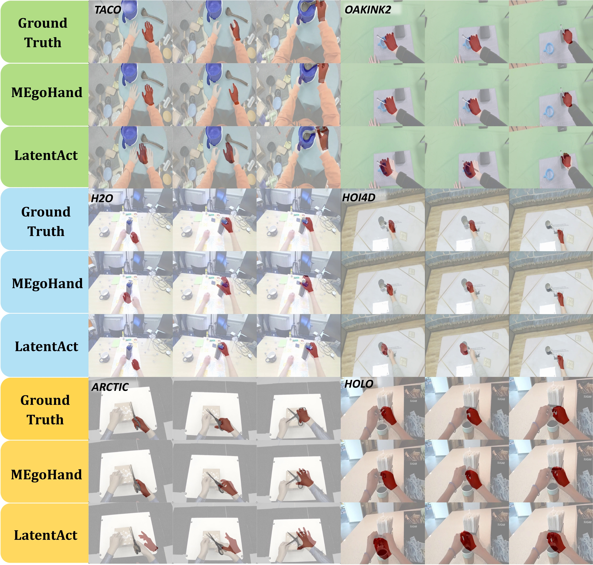
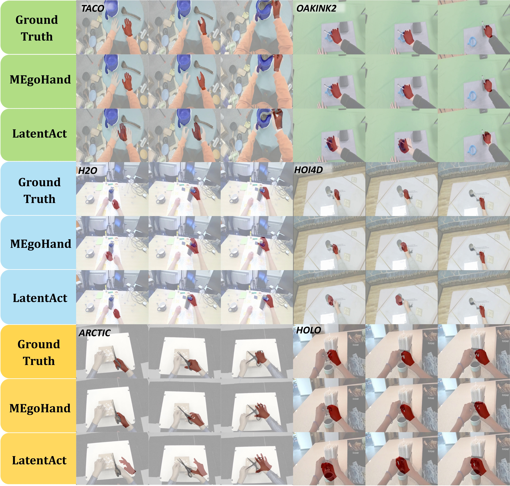

Egocentric hand-object motion generation is crucial for immersive AR/VR and robotic imitation but remains challenging due to unstable viewpoints, self-occlusions, perspective distortion, and noisy ego-motion. Existing methods rely on predefined 3D object priors, limiting generalization to novel objects, which restricts their generalizability to novel objects. Meanwhile, recent multimodal approaches suffer from ambiguous generation from abstract textual cues, intricate pipelines for modeling 3D hand-object correlation, and compounding errors in open-loop prediction. We propose MEgoHand, a multimodal model that synthesizes physically plausible hand-object interactions from egocentric RGB, text, and initial hand pose. MEgoHand introduces a bi-level architecture: a high-level “cerebrum” leverages a vision language model (VLM) to infer motion priors from visual-textual context and a monocular depth estimator for object-agnostic spatial reasoning, and a low-level DiT-based motion decoder generates fine-grained trajectories via flow-matching, along with temporal orthogonal filtering to enhance to enhance smoothness. To unify heterogeneous datasets, we design Inverse MANO Retargeting Network and Virtual RGB-D Renderer, curating a unified dataset of 3.35M RGB-D frames, 24K interactions, and 1.2K objects. Extensive experiments across 5 in-domain and 2 cross-domain datasets demonstrate the effectiveness of MEgoHand, achieving substantial reductions in wrist translation error (86.9%⬇) and joint rotation error (34.1%⬇), highlighting its capacity to accurately model fine-grained hand joint structures and generalize robustly across diverse scenarios.
In this paper, we explore how to advance the field of multimodal egocentric HOI motion generation. To this end, We introduce MEgoHand, a multimodal model for egocentric hand motion generation that integrates initial hand parameters, textual instructions, and RGB images to predict realistic hand-object interaction motion sequences. The hierarchical design combines a vision-language model and depth estimation for semantic understanding and 3D reasoning. A DiT-based motion generator conducts closed-loop prediction, enhanced by Temporal Orthogonal Filtering for temporal consistency. To address data scarcity, we curate a million-scale HOI dataset by leveraging inverse MANO retargeting and virtual RGB-D rendering. As an initial attempt to unify vision language models with 3D reasoning for motion generation, MEgoHand demonstrates strong generalization capabilities and achieves SOTA results.
@article{zhou2025megohand,
title={MEgoHand: Multimodal Egocentric Hand-Object Interaction Motion Generation},
author={Zhou, Bohan and Zhan, Yi and Zhang, Zhongbin and Lu, Zongqing},
journal={arXiv preprint arXiv:2505.16602},
year={2025}
}